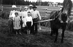
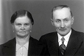

Johan Algot Forsell
Bonde på Holmfors 2, Skellefteå sn, 3/64 mtl. Blev 87 år.
| Född: | 1877-10-17 Holmfors 2, Skellefteå sn. [1] | |
|---|
| Döpt: | 1877-10-17 Holmfors, Skellefteå sn. [2] | |
|---|
| Värnplikt: | 1898 Holmfors 2, Skellefteå sn. [3] | Inskr Vpl 97 174/1898. |
|---|
| Död: | 1965-05-02 Holmfors 2, Skellefteå kn. [4] | |
|---|
| Begravd: | 1965-05-08 Skellefteå lfs, Skellefteå kn. [5] | |
|---|
| Vigsel: | 1905-12-01 Holmfors 2, Skellefteå lfs, Skellefteå sn. [6] | Omfl t fol. 267, 1906-10-05. |
|---|
| Levde: | 1905-12-02 Holmfors 2, Skellefteå lfs, Skellefteå sn. [7] | |
|---|
| Levde: | 1906-10-04 Holmfors 2, Skellefteå lfs, Skellefteå sn. [3] | |
|---|
| Levde: | 1926 Holmfors 2, Skellefteå lfs, Skellefteå sn. [8] | Omfl t NB 181/V. |
|---|
Personhistoria
| Årtal | Ålder | Händelse |
|---|
| 1877 |
|
Födelse 1877-10-17 Holmfors 2, Skellefteå sn [1] |
| 1877 |
|
Dop 1877-10-17 Holmfors, Skellefteå sn [2] |
| 1880 |
2 år |
Brodern Karl Forssell föds 1880-10-13 Holmfors 2, Skellefteå lfs, Skellefteå sn |
| 1880 |
2 år |
Brodern Karl Forssell dör 1880-10-16 Holmfors 2, Skellefteå lfs, Skellefteå sn |
| 1883 |
5 år |
Makan Sanna Adelia (Adéle) Furberg föds 1883-08-19 Stövernäs 1, Skellefteå lfs, Skellefteå sn [9] |
| 1886 |
8 år |
Brodern Gustaf Leander Forsell föds 1886-06-15 Holmfors 2, Skellefteå sn [7] |
| 1898 |
|
Värnplikt 1898 Holmfors 2, Skellefteå sn [3] |
| 1905 |
28 år |
Vigsel Sanna Adelia (Adéle) Furberg 1905-12-01 Holmfors 2, Skellefteå lfs, Skellefteå sn [6] |
| 1905 |
28 år |
Levde Sanna Adelia (Adéle) Furberg 1905-12-02 Holmfors 2, Skellefteå lfs, Skellefteå sn [7] |
| 1906 |
28 år |
Sonen Ragnar Olaus Forsell föds 1906-10-03 Holmfors 2, Skellefteå sn [3] |
| 1906 |
28 år |
Levde Sanna Adelia (Adéle) Furberg 1906-10-04 Holmfors 2, Skellefteå lfs, Skellefteå sn [3] |
| 1907 |
29 år |
Modern Kristina Amanda Nilsdotter dör 1907-03-26 Holmfors 2, Skellefteå sn [3] |
| 1908 |
30 år |
Sonen Amos Valdemar Forsell föds 1908-03-10 Holmfors 2, Skellefteå sn [10] |
| 1909 |
31 år |
Sonen Verkmästare vid Bolidens Gruvaktiebolag Birger Algot Forsell föds 1909-07-30 Holmfors 2, Skellefteå lfs, Skellefteå sn [11] |
| 1909 |
31 år |
Fadern Olof Olofsson Forsell dör 1909-10-05 Holmfors 2, Skellefteå sn [3] |
| 1911 |
33 år |
Dottern Sanna Ingrid Alida Forsell föds 1911-02-12 Holmfors 2, Skellefteå sn [3] |
| 1912 |
34 år |
Sonen Ivar Eugén Forsell föds 1912-03-24 Holmfors 2, Skellefteå sn [12] |
| 1914 |
36 år |
Sonen Torsten Gustaf Forsell föds 1914-05-09 Holmfors 2, Skellefteå sn [13] |
| 1916 |
38 år |
Dottern Magda Kerstin Andréa Forsell föds 1916-07-12 Holmfors 2, Skellefteå sn [14] |
| 1918 |
40 år |
Dottern Gunborg Anna Mari Forsell Vidman föds 1918-01-09 Holmfors 2, Skellefteå lfs, Skellefteå sn [15] |
| 1919 |
42 år |
Sonen Daniel Lennart Forsell föds 1919-10-28 Holmfors 2, Skellefteå sn [16] |
| 1923 |
45 år |
Sonen Amos Valdemar Forsell dör 1923-03-07 Holmfors 2, Skellefteå sn [17] |
| 1924 |
46 år |
Dottern Margit Inga Greta Forsell föds 1924-07-26 Holmfors 2, Skellefteå sn [18] |
| 1926 |
|
Levde Sanna Adelia (Adéle) Furberg 1926 Holmfors 2, Skellefteå lfs, Skellefteå sn [8] |
| 1928 |
50 år |
Sonen Harry Amos Forsell föds 1928-07-31 Skellefteå sfs, Skellefteå sn [19] |
| 1964 |
87 år |
Sonen Ragnar Olaus Forsell dör 1964-10-29 Embla 4, Umeå sfs, Umeå stad [20] |
| 1965 |
87 år |
Död 1965-05-02 Holmfors 2, Skellefteå kn [4] |
| 1965 |
|
Begravning 1965-05-08 Skellefteå lfs, Skellefteå kn [5] |
Källor
| [1] | Skellefteå lfs C:14 s.380 r.5 , DOR 65, UTD 61-67 |
| |
| | |
| [2] | Skellefteå lfs C:14 s.380 r.5 |
| |
| | |
| [3] | Skellefteå lfs AIIA:3 (1900-1910) fol. 267 k.7/9 |
| |
| | |
| [4] | DOR 65, UTD 61-67, NV Dödsannonsering 1965-05-05 |
| |
| | |
| [5] | NV - Dödsannonsregistrering 1965-05-03, 1965-05-05 |
| |
| | |
| [6] | Skellefteå lfs SCB EI:5 (1900-1914) 96/1905, DOR 65, UTD 61-67 |
| |
| | |
| [7] | Skellefteå lfs AIIA:3 (1900-1910) fol. 265 k.6/9 |
| |
| | |
| [8] | Skellefteå lfs AIIA:14 (1912-1926) fol. 290 k.7/9 |
| |
| | |
| [9] | Skellefteå lfs C:15 (1880-1891) s.126 r.3, AI:14A (1891-1899) fol. 44 k.2/14, SPAR 80, RTB 79 |
| |
| | |
| [10] | AIIA:3 (1900-1910) fol. 267 k.7/9 |
| |
| | |
| [11] | Skellefteå lfs AIIA:3 (1900-1910) fol. 267 k.7/9 |
| |
| | |
| [12] | Skellefteå lfs C:2 147/1912 s.245 k.6/6, AIIA:14 (1912-1926) s.290 k.7/9 |
| |
| | |
| [13] | Skellefteå lfs C:23 25/1914 s.53 k.2/9, AIIA:14 (1912-1926) fol. 290 k.7/9 |
| |
| | |
| [14] | Skellefteå lfs C:23 (1913-1917) 350/1916 s.258 k.6/9, AIIA:14 (1912-1926) fol. 290 k.7/9 |
| |
| | |
| [15] | Skellefteå lfs C:24 (1918-1921) 22/1918 s.3 k.1/9, AIIA:14 (1912-1926) fol. 290 k.7/9 |
| |
| | |
| [16] | Skellefteå lfs C:24 609/1919 k.4/9, AIIA:14 (1912-1926) fol. 290 k.7/9 |
| |
| | |
| [17] | AIIA:14 (1912-1926) fol. 290 k.7/9 |
| |
| | |
| [18] | Skellefteå lfs C 1924 256/1924 k.10/15, AIIA:14 (1912-1926) fol. 290 k.7/9 |
| |
| | |
| [19] | Mtl Västerbottens län 1981 |
| |
| | |
| [20] | AL / DOR 64 / UTD 61-67, NV - Dödsannonsregistrering 1964-11-02 |
| |
|
 |
|
| |
 |
| 1906. Ett år efter vigseln i samband med en släktings bröllop. |
| |
|  |
|
| |
 |
|
| |
|  |
|
| |
 |
|
|


{kind=link}
{kind=link}